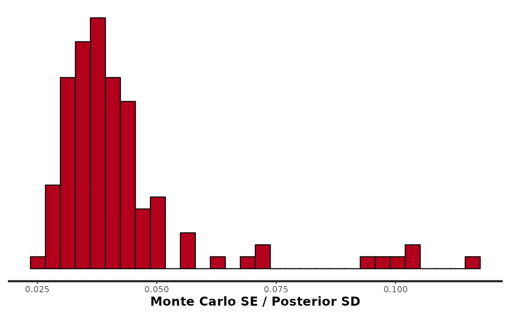
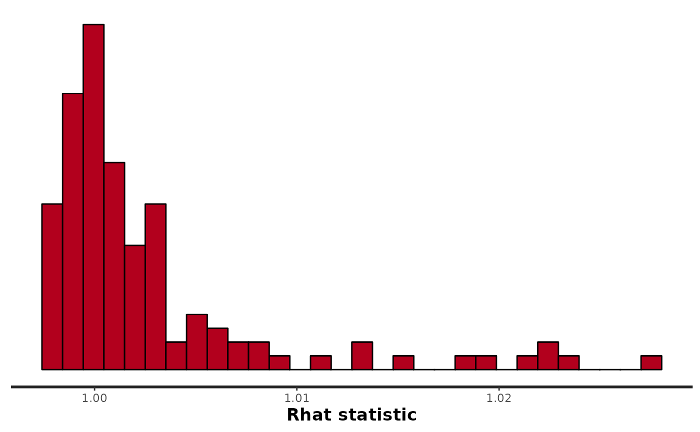
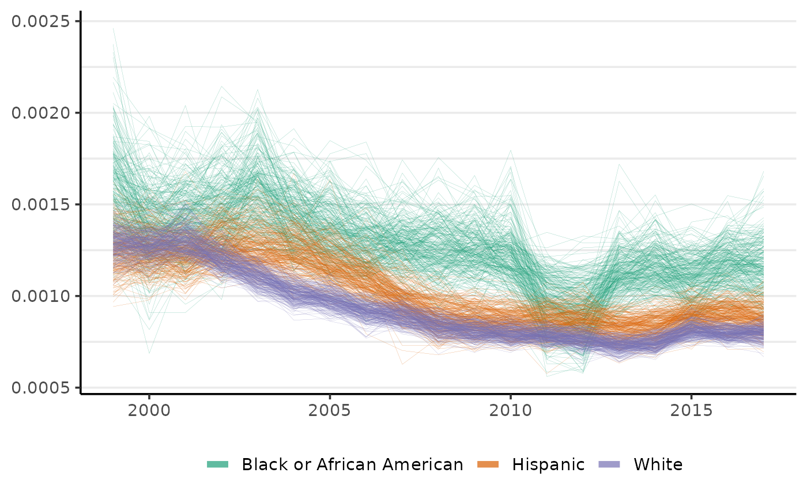
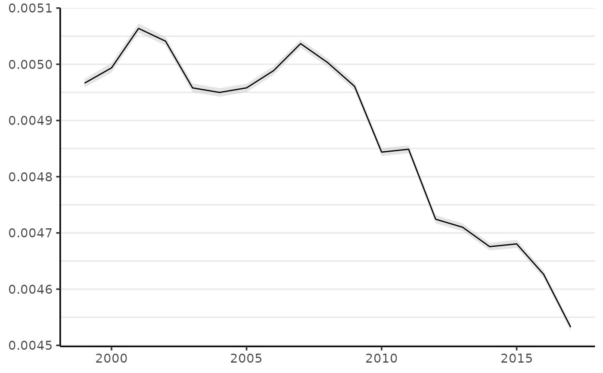

Model time-varying incidence rates given a time series of case (or death) counts and population at risk.
Source
Brandt P and Williams JT. Multiple time series models. Thousand Oaks, CA: SAGE Publications, 2007.
Clayton, DG. Generalized linear mixed models. In: Gilks WR, Richardson S, Spiegelhalter DJ, editors. Markov Chain Monte Carlo in Practice: Interdisciplinary Statistics. Boca Raton, FL: CRC Press, 1996. p. 275-302.
Donegan C, Hughes AE, and Lee SC (2022). Colorectal Cancer Incidence, Inequalities, and Prevention Priorities in Urban Texas: Surveillance Study With the "surveil" Software Package. JMIR Public Health & Surveillance 8(8):e34589. doi:10.2196/34589
Stan Development Team. Stan Modeling Language Users Guide and Reference Manual, 2.28. 2021. https://mc-stan.org
Arguments
- data
A
data.framecontaining the following columns:- Count
Number of cases or deaths; this column must be named 'Count'.
- Population
Size of population at risk; this column must be named 'Population'.
- time
Time period indicator. (Provide the (unquoted) column name using the
timeargument.)- group
Optional grouping variable. (Provide the (unquoted) column name using the
groupargument.)
- group
If
datais aggregated by demographic group, provide the (unquoted) name of the column indatacontaining the grouping structure, such as age brackets or race-ethnicity. E.g., ifdatahas column namesYear,Race,Cases, andPopulation, then you would providegroup = Race.- time
Specify the (unquoted) name of the time variable in
data, as intime = Year. This variable must be numeric-alike (i.e.,as.numeric(data$time)will not fail).- cor
For correlated random walks use
cor = TRUE; default value isFALSE. Note this only applies when thegroupargument is used.- family
The default specification is a Poisson model with log link function (
family = poisson()). For a Binomial model with logit link function, usefamily = binomial().- prior
Optionally provide a named
listwith prior parameters. If any of the following items are missing, default priors will be assigned and printed to the console.- eta_1
The first value of log-risk in each series must be assigned a Gaussian prior probability distribution. Provide the location and scale parameters for each demographic group in a list, where each parameter is a
k-length vector.For example, with
k=2demographic groups, the following code will assign priors ofnormal(-6.5, 5)to the starting values of both series:prior = list(eta_1 = normal(location = -6.5, scale = 5, k = 2). Note,etais the log-rate, so centering the prior foreta_1on-6.5is similar to centering the prior rate onexp(-6.5)*100,000 = 150cases per 100,000 person-years at risk. Note, however, that the translation from log-rate to rate is non-linear.- sigma
Each demographic group has a scale parameter assigned to its log-rate. This is the scale of the annual deviations from the previous year's log-rate. The scale parameters are assigned independent half-normal prior distributions (these
halfnormal distributions are restricted to be positive-valued only).- omega
If
cor = TRUE, an LKJ prior is assigned to the correlation matrix, Omega.
- chains
Number of independent MCMC chains to initiate (passed to
sampling).- cores
The number of cores to use when executing the Markov chains in parallel (passed to
sampling).- iter
Total number of MCMC iterations. Warmup draws are automatically half of
iter.- refresh
How often to print the MCMC sampling progress to the console.
- control
A named list of parameters to control Stan's sampling behavior. The most common parameters to control are
adapt_delta, which may be raised to address divergent transitions, andmax_treedepth. For example,control = list(adapt_delta = 0.99, max_treedepth = 13), may be a reasonable specification to address a divergent transitions or maximum treedepth warning from Stan.- ...
Other arguments passed to
sampling.
Value
The function returns a list, also of class surveil, containing the following elements:
- summary
A
data.framewith posterior means and 95 percent credible intervals, as well as the raw data (Count, Population, time period, grouping variable if any, and crude rates).- samples
A
stanfitobject returned bysampling. This contains the MCMC samples from the posterior distribution of the fitted model.- cor
Logical value indicating if the model included a correlation structure.
- time
A list containing the name of the time-period column in the user-provided data and a
data.frameof observed time periods and their index.- group
If a grouping variable was used, this will be a list containing the name of the grouping variable and a
data.framewith group labels and index values.- family
The user-provided
familyargument.
Details
By default, the models have Poisson likelihoods for the case counts, with log link function. Alternatively, a Binomial model with logit link function can be specified using the family argument (family = binomial()).
For time t = 1,...n, the models assign Poisson probability distribution to the case counts, given log-risk eta and population at tirks P; the log-risk is modeled using the first-difference (or random-walk) prior:
y_t ~ Poisson(p_t * exp(eta_t))
eta_t ~ Normal(eta_{t-1}, sigma)
eta_1 ~ Normal(-6, 5) (-Inf, 0)
sigma ~ Normal(0, 1) (0, Inf)
This style of model has been discussed in Bayesian (bio)statistics for quite some time. See Clayton (1996).
The above model can be used for multiple distinct groups; in that case, each group will have its own independent time series model.
It is also possible to add a correlation structure to that set of models. Let Y_t be a k-length vector of observations for each of k groups at time t (the capital letter now indicates a vector), then:
Y_t ~ Poisson(P_t * exp(Eta_t))
Eta_t ~ MVNormal(Eta_{t-1}, Sigma)
Eta_1 ~ Normal(-6, 5) (-Inf, 0)
Sigma = diag(sigma) * Omega * diag(sigma)
Omega ~ LKJ(2)
sigma ~ Normal(0, 1) (0, Inf)
where Omega is a correlation matrix and diag(sigma) is a diagonal matrix with scale parameters on the diagonal. This was adopted from Brandt and Williams (2007); for the LKJ prior, see the Stan Users Guide and Reference Manual.
If the binomial model is used instead of the Poisson, then the first line of the model specifications will be:
y_t ~ binomial(P_t, inverse_logit(eta_t))All else is remains the same. The logit function is log(r/(1-r)), where r is a rate between zero and one; the inverse-logit function is exp(x)/(1 + exp(x)).
See also
vignette("demonstration", package = "surveil") vignette("age-standardization", package = "surveil") apc standardize
Examples
# \donttest{
library(rstan)
#> Loading required package: StanHeaders
#> Loading required package: ggplot2
#> rstan (Version 2.21.5, GitRev: 2e1f913d3ca3)
#> For execution on a local, multicore CPU with excess RAM we recommend calling
#> options(mc.cores = parallel::detectCores()).
#> To avoid recompilation of unchanged Stan programs, we recommend calling
#> rstan_options(auto_write = TRUE)
data(msa)
austin <- msa[grep("Austin", msa$MSA), ]
fit <- stan_rw(austin,
time = Year,
group = Race,
chains = 2, iter = 900) # for speed only
#> [1] "Setting normal prior(s) for eta_1: "
#> Distribution: normal
#> location scale
#> -6 5
#> [1] "\nSetting half-normal prior for sigma: "
#> Distribution: normal
#> location scale
#> 0 1
#>
#> SAMPLING FOR MODEL 'RW' NOW (CHAIN 1).
#> Chain 1:
#> Chain 1: Gradient evaluation took 2.2e-05 seconds
#> Chain 1: 1000 transitions using 10 leapfrog steps per transition would take 0.22 seconds.
#> Chain 1: Adjust your expectations accordingly!
#> Chain 1:
#> Chain 1:
#> Chain 1: Iteration: 1 / 900 [ 0%] (Warmup)
#> Chain 1: Iteration: 451 / 900 [ 50%] (Sampling)
#> Chain 1: Iteration: 900 / 900 [100%] (Sampling)
#> Chain 1:
#> Chain 1: Elapsed Time: 0.266614 seconds (Warm-up)
#> Chain 1: 0.251356 seconds (Sampling)
#> Chain 1: 0.51797 seconds (Total)
#> Chain 1:
#>
#> SAMPLING FOR MODEL 'RW' NOW (CHAIN 2).
#> Chain 2:
#> Chain 2: Gradient evaluation took 1.4e-05 seconds
#> Chain 2: 1000 transitions using 10 leapfrog steps per transition would take 0.14 seconds.
#> Chain 2: Adjust your expectations accordingly!
#> Chain 2:
#> Chain 2:
#> Chain 2: Iteration: 1 / 900 [ 0%] (Warmup)
#> Chain 2: Iteration: 451 / 900 [ 50%] (Sampling)
#> Chain 2: Iteration: 900 / 900 [100%] (Sampling)
#> Chain 2:
#> Chain 2: Elapsed Time: 0.288353 seconds (Warm-up)
#> Chain 2: 0.237164 seconds (Sampling)
#> Chain 2: 0.525517 seconds (Total)
#> Chain 2:
#> Warning: Bulk Effective Samples Size (ESS) is too low, indicating posterior means and medians may be unreliable.
#> Running the chains for more iterations may help. See
#> https://mc-stan.org/misc/warnings.html#bulk-ess
#> Warning: Tail Effective Samples Size (ESS) is too low, indicating posterior variances and tail quantiles may be unreliable.
#> Running the chains for more iterations may help. See
#> https://mc-stan.org/misc/warnings.html#tail-ess
## MCMC diagnostics
rstan::stan_mcse(fit$samples)
#> `stat_bin()` using `bins = 30`. Pick better value with `binwidth`.

rstan::stan_rhat(fit$samples)
#> `stat_bin()` using `bins = 30`. Pick better value with `binwidth`.

print(fit$samples)
#> Inference for Stan model: RW.
#> 2 chains, each with iter=900; warmup=450; thin=1;
#> post-warmup draws per chain=450, total post-warmup draws=900.
#>
#> mean se_mean sd 2.5% 25% 50% 75% 97.5% n_eff
#> rate[1,1] 0.00 0.00 0.00 0.00 0.00 0.00 0.00 0.00 317
#> rate[1,2] 0.00 0.00 0.00 0.00 0.00 0.00 0.00 0.00 847
#> rate[1,3] 0.00 0.00 0.00 0.00 0.00 0.00 0.00 0.00 563
#> rate[1,4] 0.00 0.00 0.00 0.00 0.00 0.00 0.00 0.00 490
#> rate[1,5] 0.00 0.00 0.00 0.00 0.00 0.00 0.00 0.00 197
#> rate[1,6] 0.00 0.00 0.00 0.00 0.00 0.00 0.00 0.00 643
#> rate[1,7] 0.00 0.00 0.00 0.00 0.00 0.00 0.00 0.00 764
#> rate[1,8] 0.00 0.00 0.00 0.00 0.00 0.00 0.00 0.00 817
#> rate[1,9] 0.00 0.00 0.00 0.00 0.00 0.00 0.00 0.00 771
#> rate[1,10] 0.00 0.00 0.00 0.00 0.00 0.00 0.00 0.00 582
#> rate[1,11] 0.00 0.00 0.00 0.00 0.00 0.00 0.00 0.00 883
#> rate[1,12] 0.00 0.00 0.00 0.00 0.00 0.00 0.00 0.00 847
#> rate[1,13] 0.00 0.00 0.00 0.00 0.00 0.00 0.00 0.00 115
#> rate[1,14] 0.00 0.00 0.00 0.00 0.00 0.00 0.00 0.00 100
#> rate[1,15] 0.00 0.00 0.00 0.00 0.00 0.00 0.00 0.00 965
#> rate[1,16] 0.00 0.00 0.00 0.00 0.00 0.00 0.00 0.00 903
#> rate[1,17] 0.00 0.00 0.00 0.00 0.00 0.00 0.00 0.00 550
#> rate[1,18] 0.00 0.00 0.00 0.00 0.00 0.00 0.00 0.00 904
#> rate[1,19] 0.00 0.00 0.00 0.00 0.00 0.00 0.00 0.00 1007
#> rate[2,1] 0.00 0.00 0.00 0.00 0.00 0.00 0.00 0.00 1028
#> rate[2,2] 0.00 0.00 0.00 0.00 0.00 0.00 0.00 0.00 807
#> rate[2,3] 0.00 0.00 0.00 0.00 0.00 0.00 0.00 0.00 707
#> rate[2,4] 0.00 0.00 0.00 0.00 0.00 0.00 0.00 0.00 657
#> rate[2,5] 0.00 0.00 0.00 0.00 0.00 0.00 0.00 0.00 660
#> rate[2,6] 0.00 0.00 0.00 0.00 0.00 0.00 0.00 0.00 799
#> rate[2,7] 0.00 0.00 0.00 0.00 0.00 0.00 0.00 0.00 760
#> rate[2,8] 0.00 0.00 0.00 0.00 0.00 0.00 0.00 0.00 765
#> rate[2,9] 0.00 0.00 0.00 0.00 0.00 0.00 0.00 0.00 837
#> rate[2,10] 0.00 0.00 0.00 0.00 0.00 0.00 0.00 0.00 655
#> rate[2,11] 0.00 0.00 0.00 0.00 0.00 0.00 0.00 0.00 888
#> rate[2,12] 0.00 0.00 0.00 0.00 0.00 0.00 0.00 0.00 715
#> rate[2,13] 0.00 0.00 0.00 0.00 0.00 0.00 0.00 0.00 720
#> rate[2,14] 0.00 0.00 0.00 0.00 0.00 0.00 0.00 0.00 842
#> rate[2,15] 0.00 0.00 0.00 0.00 0.00 0.00 0.00 0.00 582
#> rate[2,16] 0.00 0.00 0.00 0.00 0.00 0.00 0.00 0.00 854
#> rate[2,17] 0.00 0.00 0.00 0.00 0.00 0.00 0.00 0.00 978
#> rate[2,18] 0.00 0.00 0.00 0.00 0.00 0.00 0.00 0.00 937
#> rate[2,19] 0.00 0.00 0.00 0.00 0.00 0.00 0.00 0.00 966
#> rate[3,1] 0.00 0.00 0.00 0.00 0.00 0.00 0.00 0.00 1157
#> rate[3,2] 0.00 0.00 0.00 0.00 0.00 0.00 0.00 0.00 1072
#> rate[3,3] 0.00 0.00 0.00 0.00 0.00 0.00 0.00 0.00 544
#> rate[3,4] 0.00 0.00 0.00 0.00 0.00 0.00 0.00 0.00 1006
#> rate[3,5] 0.00 0.00 0.00 0.00 0.00 0.00 0.00 0.00 1236
#> rate[3,6] 0.00 0.00 0.00 0.00 0.00 0.00 0.00 0.00 1098
#> rate[3,7] 0.00 0.00 0.00 0.00 0.00 0.00 0.00 0.00 1399
#> rate[3,8] 0.00 0.00 0.00 0.00 0.00 0.00 0.00 0.00 1621
#> rate[3,9] 0.00 0.00 0.00 0.00 0.00 0.00 0.00 0.00 1178
#> rate[3,10] 0.00 0.00 0.00 0.00 0.00 0.00 0.00 0.00 1010
#> rate[3,11] 0.00 0.00 0.00 0.00 0.00 0.00 0.00 0.00 1072
#> rate[3,12] 0.00 0.00 0.00 0.00 0.00 0.00 0.00 0.00 1235
#> rate[3,13] 0.00 0.00 0.00 0.00 0.00 0.00 0.00 0.00 1089
#> rate[3,14] 0.00 0.00 0.00 0.00 0.00 0.00 0.00 0.00 1015
#> rate[3,15] 0.00 0.00 0.00 0.00 0.00 0.00 0.00 0.00 971
#> rate[3,16] 0.00 0.00 0.00 0.00 0.00 0.00 0.00 0.00 908
#> rate[3,17] 0.00 0.00 0.00 0.00 0.00 0.00 0.00 0.00 1160
#> rate[3,18] 0.00 0.00 0.00 0.00 0.00 0.00 0.00 0.00 1114
#> rate[3,19] 0.00 0.00 0.00 0.00 0.00 0.00 0.00 0.00 1256
#> sigma[1] 0.15 0.01 0.08 0.03 0.09 0.14 0.20 0.32 74
#> sigma[2] 0.10 0.00 0.04 0.04 0.07 0.09 0.12 0.18 212
#> sigma[3] 0.08 0.00 0.02 0.05 0.07 0.08 0.09 0.14 310
#> log_lik[1,1] -3.43 0.04 0.80 -5.48 -3.83 -3.20 -2.78 -2.59 484
#> log_lik[1,2] -3.18 0.02 0.68 -4.86 -3.56 -3.03 -2.66 -2.32 891
#> log_lik[1,3] -2.64 0.01 0.24 -3.35 -2.69 -2.55 -2.48 -2.47 567
#> log_lik[1,4] -2.70 0.01 0.28 -3.55 -2.74 -2.59 -2.53 -2.51 447
#> log_lik[1,5] -3.66 0.06 0.84 -5.63 -4.17 -3.48 -2.99 -2.69 198
#> log_lik[1,6] -2.72 0.01 0.24 -3.40 -2.78 -2.62 -2.57 -2.55 738
#> log_lik[1,7] -2.74 0.01 0.23 -3.35 -2.78 -2.66 -2.59 -2.57 439
#> log_lik[1,8] -2.79 0.01 0.36 -3.75 -2.87 -2.66 -2.56 -2.53 658
#> log_lik[1,9] -2.82 0.01 0.32 -3.79 -2.85 -2.70 -2.64 -2.62 484
#> log_lik[1,10] -2.81 0.02 0.30 -3.75 -2.85 -2.70 -2.64 -2.62 257
#> log_lik[1,11] -2.85 0.01 0.30 -3.58 -2.91 -2.74 -2.67 -2.65 415
#> log_lik[1,12] -3.74 0.03 0.86 -5.90 -4.17 -3.53 -3.11 -2.76 832
#> log_lik[1,13] -4.00 0.11 1.13 -6.44 -4.81 -3.80 -3.09 -2.41 109
#> log_lik[1,14] -5.05 0.18 1.68 -8.61 -6.18 -4.80 -3.78 -2.45 92
#> log_lik[1,15] -3.43 0.03 0.66 -5.10 -3.69 -3.26 -2.94 -2.78 593
#> log_lik[1,16] -3.17 0.02 0.47 -4.60 -3.31 -3.02 -2.84 -2.79 387
#> log_lik[1,17] -3.17 0.02 0.52 -4.57 -3.39 -3.02 -2.78 -2.69 735
#> log_lik[1,18] -3.12 0.02 0.42 -4.36 -3.20 -2.95 -2.85 -2.82 543
#> log_lik[1,19] -3.15 0.03 0.46 -4.57 -3.21 -2.96 -2.86 -2.82 317
#> log_lik[2,1] -2.94 0.01 0.31 -3.75 -3.01 -2.83 -2.76 -2.74 631
#> log_lik[2,2] -3.01 0.01 0.28 -3.83 -3.07 -2.89 -2.82 -2.80 648
#> log_lik[2,3] -3.55 0.03 0.69 -5.39 -3.86 -3.40 -3.08 -2.72 613
#> log_lik[2,4] -3.57 0.02 0.56 -4.98 -3.83 -3.44 -3.14 -2.93 738
#> log_lik[2,5] -3.11 0.01 0.27 -3.85 -3.20 -3.01 -2.92 -2.90 686
#> log_lik[2,6] -3.41 0.02 0.50 -4.67 -3.64 -3.26 -3.03 -2.95 769
#> log_lik[2,7] -3.08 0.01 0.26 -3.78 -3.13 -2.98 -2.93 -2.92 484
#> log_lik[2,8] -3.25 0.02 0.40 -4.30 -3.35 -3.11 -2.99 -2.95 590
#> log_lik[2,9] -3.08 0.01 0.31 -3.96 -3.13 -2.97 -2.92 -2.90 459
#> log_lik[2,10] -3.66 0.03 0.74 -5.35 -4.08 -3.47 -3.09 -2.82 689
#> log_lik[2,11] -3.11 0.01 0.25 -3.82 -3.18 -3.02 -2.94 -2.92 510
#> log_lik[2,12] -3.11 0.01 0.26 -3.83 -3.17 -3.02 -2.95 -2.93 469
#> log_lik[2,13] -3.17 0.01 0.28 -3.88 -3.25 -3.07 -3.00 -2.98 416
#> log_lik[2,14] -3.43 0.02 0.47 -4.80 -3.58 -3.25 -3.11 -3.06 518
#> log_lik[2,15] -3.53 0.02 0.57 -5.03 -3.78 -3.37 -3.10 -2.99 650
#> log_lik[2,16] -3.49 0.02 0.51 -4.89 -3.73 -3.34 -3.11 -3.02 637
#> log_lik[2,17] -3.64 0.02 0.52 -4.95 -3.88 -3.47 -3.26 -3.18 853
#> log_lik[2,18] -3.50 0.02 0.43 -4.72 -3.61 -3.34 -3.23 -3.19 624
#> log_lik[2,19] -3.51 0.02 0.47 -4.87 -3.65 -3.31 -3.21 -3.18 456
#> log_lik[3,1] -3.91 0.02 0.47 -5.35 -4.02 -3.72 -3.61 -3.57 385
#> log_lik[3,2] -3.87 0.02 0.46 -5.09 -3.95 -3.71 -3.61 -3.58 417
#> log_lik[3,3] -4.73 0.04 0.94 -6.84 -5.24 -4.51 -3.96 -3.67 697
#> log_lik[3,4] -3.85 0.02 0.35 -4.81 -3.91 -3.72 -3.63 -3.60 492
#> log_lik[3,5] -3.84 0.02 0.35 -4.82 -3.94 -3.70 -3.61 -3.59 415
#> log_lik[3,6] -3.93 0.02 0.50 -5.29 -4.07 -3.75 -3.60 -3.55 690
#> log_lik[3,7] -3.94 0.02 0.49 -5.28 -4.04 -3.76 -3.63 -3.60 581
#> log_lik[3,8] -3.93 0.02 0.49 -5.41 -4.09 -3.72 -3.60 -3.56 553
#> log_lik[3,9] -3.94 0.02 0.44 -5.20 -4.09 -3.77 -3.64 -3.61 685
#> log_lik[3,10] -3.88 0.02 0.40 -4.98 -3.99 -3.73 -3.61 -3.58 661
#> log_lik[3,11] -3.88 0.02 0.41 -5.02 -3.99 -3.72 -3.62 -3.58 634
#> log_lik[3,12] -3.87 0.02 0.35 -4.90 -3.95 -3.74 -3.64 -3.61 539
#> log_lik[3,13] -3.91 0.02 0.38 -4.96 -3.99 -3.76 -3.66 -3.63 540
#> log_lik[3,14] -3.93 0.02 0.43 -5.04 -4.02 -3.77 -3.67 -3.64 570
#> log_lik[3,15] -4.11 0.02 0.61 -5.71 -4.29 -3.89 -3.69 -3.61 822
#> log_lik[3,16] -4.16 0.02 0.62 -5.88 -4.41 -3.94 -3.71 -3.64 935
#> log_lik[3,17] -4.69 0.03 0.95 -7.42 -5.10 -4.43 -3.96 -3.76 750
#> log_lik[3,18] -3.98 0.02 0.36 -4.94 -4.07 -3.84 -3.75 -3.72 561
#> log_lik[3,19] -4.07 0.02 0.48 -5.44 -4.15 -3.89 -3.77 -3.74 526
#> lp__ -57.73 1.03 10.01 -76.93 -64.57 -58.42 -51.35 -36.54 95
#> Rhat
#> rate[1,1] 1.02
#> rate[1,2] 1.00
#> rate[1,3] 1.00
#> rate[1,4] 1.01
#> rate[1,5] 1.02
#> rate[1,6] 1.00
#> rate[1,7] 1.00
#> rate[1,8] 1.00
#> rate[1,9] 1.00
#> rate[1,10] 1.00
#> rate[1,11] 1.00
#> rate[1,12] 1.00
#> rate[1,13] 1.02
#> rate[1,14] 1.02
#> rate[1,15] 1.00
#> rate[1,16] 1.00
#> rate[1,17] 1.00
#> rate[1,18] 1.00
#> rate[1,19] 1.00
#> rate[2,1] 1.00
#> rate[2,2] 1.00
#> rate[2,3] 1.00
#> rate[2,4] 1.00
#> rate[2,5] 1.00
#> rate[2,6] 1.00
#> rate[2,7] 1.00
#> rate[2,8] 1.00
#> rate[2,9] 1.00
#> rate[2,10] 1.00
#> rate[2,11] 1.00
#> rate[2,12] 1.00
#> rate[2,13] 1.00
#> rate[2,14] 1.00
#> rate[2,15] 1.00
#> rate[2,16] 1.00
#> rate[2,17] 1.00
#> rate[2,18] 1.00
#> rate[2,19] 1.00
#> rate[3,1] 1.00
#> rate[3,2] 1.00
#> rate[3,3] 1.01
#> rate[3,4] 1.00
#> rate[3,5] 1.00
#> rate[3,6] 1.00
#> rate[3,7] 1.00
#> rate[3,8] 1.00
#> rate[3,9] 1.00
#> rate[3,10] 1.00
#> rate[3,11] 1.00
#> rate[3,12] 1.00
#> rate[3,13] 1.00
#> rate[3,14] 1.00
#> rate[3,15] 1.00
#> rate[3,16] 1.00
#> rate[3,17] 1.00
#> rate[3,18] 1.00
#> rate[3,19] 1.00
#> sigma[1] 1.03
#> sigma[2] 1.01
#> sigma[3] 1.00
#> log_lik[1,1] 1.01
#> log_lik[1,2] 1.00
#> log_lik[1,3] 1.00
#> log_lik[1,4] 1.00
#> log_lik[1,5] 1.02
#> log_lik[1,6] 1.00
#> log_lik[1,7] 1.00
#> log_lik[1,8] 1.00
#> log_lik[1,9] 1.01
#> log_lik[1,10] 1.01
#> log_lik[1,11] 1.00
#> log_lik[1,12] 1.00
#> log_lik[1,13] 1.02
#> log_lik[1,14] 1.02
#> log_lik[1,15] 1.00
#> log_lik[1,16] 1.00
#> log_lik[1,17] 1.00
#> log_lik[1,18] 1.00
#> log_lik[1,19] 1.00
#> log_lik[2,1] 1.00
#> log_lik[2,2] 1.00
#> log_lik[2,3] 1.00
#> log_lik[2,4] 1.00
#> log_lik[2,5] 1.00
#> log_lik[2,6] 1.00
#> log_lik[2,7] 1.01
#> log_lik[2,8] 1.00
#> log_lik[2,9] 1.00
#> log_lik[2,10] 1.00
#> log_lik[2,11] 1.00
#> log_lik[2,12] 1.01
#> log_lik[2,13] 1.01
#> log_lik[2,14] 1.00
#> log_lik[2,15] 1.00
#> log_lik[2,16] 1.00
#> log_lik[2,17] 1.00
#> log_lik[2,18] 1.00
#> log_lik[2,19] 1.00
#> log_lik[3,1] 1.00
#> log_lik[3,2] 1.01
#> log_lik[3,3] 1.00
#> log_lik[3,4] 1.01
#> log_lik[3,5] 1.00
#> log_lik[3,6] 1.00
#> log_lik[3,7] 1.00
#> log_lik[3,8] 1.00
#> log_lik[3,9] 1.00
#> log_lik[3,10] 1.00
#> log_lik[3,11] 1.00
#> log_lik[3,12] 1.00
#> log_lik[3,13] 1.00
#> log_lik[3,14] 1.00
#> log_lik[3,15] 1.00
#> log_lik[3,16] 1.00
#> log_lik[3,17] 1.00
#> log_lik[3,18] 1.00
#> log_lik[3,19] 1.00
#> lp__ 1.01
#>
#> Samples were drawn using NUTS(diag_e) at Sun Aug 21 17:48:32 2022.
#> For each parameter, n_eff is a crude measure of effective sample size,
#> and Rhat is the potential scale reduction factor on split chains (at
#> convergence, Rhat=1).
## print the surveil object
print(fit)
#> Summary of surveil model results
#> Time periods: 19
#> Grouping variable: Race
#> Correlation matrix: FALSE
#> time Race mean lwr_2.5 upr_97.5
#> 1 1999 Black or African American 0.0015848412 0.0011877953 0.0020828178
#> 2 2000 Black or African American 0.0014019580 0.0010260474 0.0017615104
#> 3 2001 Black or African American 0.0014283937 0.0011050316 0.0017735582
#> 4 2002 Black or African American 0.0014715590 0.0011429487 0.0018568079
#> 5 2003 Black or African American 0.0015693765 0.0012417251 0.0019721611
#> 6 2004 Black or African American 0.0014428772 0.0011563549 0.0017844306
#> 7 2005 Black or African American 0.0013706806 0.0011062975 0.0016825717
#> 8 2006 Black or African American 0.0012897184 0.0010310250 0.0015841298
#> 9 2007 Black or African American 0.0012856628 0.0010036486 0.0015798873
#> 10 2008 Black or African American 0.0012633995 0.0010151185 0.0015940207
#> 11 2009 Black or African American 0.0012394670 0.0010108120 0.0015331413
#> 12 2010 Black or African American 0.0012040869 0.0009541221 0.0015364278
#> 13 2011 Black or African American 0.0009677841 0.0006712559 0.0012181372
#> 14 2012 Black or African American 0.0009285542 0.0006307269 0.0011990754
#> 15 2013 Black or African American 0.0011209930 0.0009077986 0.0013896400
#> 16 2014 Black or African American 0.0011644625 0.0009268687 0.0014516202
#> 17 2015 Black or African American 0.0011081610 0.0008679827 0.0013353059
#> 18 2016 Black or African American 0.0011780060 0.0009483577 0.0014390586
#> 19 2017 Black or African American 0.0011795713 0.0009187807 0.0014879843
#> 20 1999 Hispanic 0.0012607261 0.0010181604 0.0015269117
#> 21 2000 Hispanic 0.0012518041 0.0010499970 0.0014706339
#> 22 2001 Hispanic 0.0012234715 0.0010375369 0.0014511210
#> 23 2002 Hispanic 0.0012811025 0.0011013518 0.0015046711
#> 24 2003 Hispanic 0.0012678221 0.0010877001 0.0014945238
#> 25 2004 Hispanic 0.0012383464 0.0010567973 0.0014612468
#> 26 2005 Hispanic 0.0011631912 0.0009968949 0.0013634654
#> 27 2006 Hispanic 0.0010876692 0.0009291861 0.0012608316
#> 28 2007 Hispanic 0.0009825842 0.0008310177 0.0011347561
#> 29 2008 Hispanic 0.0008963600 0.0007433791 0.0010431272
#> 30 2009 Hispanic 0.0008845585 0.0007414726 0.0010237806
#> 31 2010 Hispanic 0.0008672868 0.0007419308 0.0009955945
#> 32 2011 Hispanic 0.0008607720 0.0007310035 0.0009842923
#> 33 2012 Hispanic 0.0008659974 0.0007368001 0.0010056321
#> 34 2013 Hispanic 0.0008268198 0.0007019712 0.0009509387
#> 35 2014 Hispanic 0.0008377413 0.0007211132 0.0009568969
#> 36 2015 Hispanic 0.0008980142 0.0007905817 0.0010318797
#> 37 2016 Hispanic 0.0009028189 0.0007817692 0.0010285969
#> 38 2017 Hispanic 0.0008831297 0.0007425296 0.0010351708
#> 39 1999 White 0.0012876573 0.0011469237 0.0014441607
#> 40 2000 White 0.0012775066 0.0011623148 0.0014101655
#> 41 2001 White 0.0013081191 0.0011992683 0.0014566390
#> 42 2002 White 0.0011983149 0.0010967010 0.0013125061
#> 43 2003 White 0.0011055254 0.0010035420 0.0012096700
#> 44 2004 White 0.0010181684 0.0009193822 0.0011165098
#> 45 2005 White 0.0009843363 0.0008902500 0.0010846319
#> 46 2006 White 0.0009142544 0.0008212150 0.0010093236
#> 47 2007 White 0.0008909681 0.0008107812 0.0009798419
#> 48 2008 White 0.0008350734 0.0007547688 0.0009127109
#> 49 2009 White 0.0008079786 0.0007286936 0.0008877702
#> 50 2010 White 0.0007959113 0.0007251886 0.0008711637
#> 51 2011 White 0.0007880309 0.0007191357 0.0008635822
#> 52 2012 White 0.0007648297 0.0006945550 0.0008383179
#> 53 2013 White 0.0007293816 0.0006578930 0.0007981264
#> 54 2014 White 0.0007411043 0.0006717365 0.0008103823
#> 55 2015 White 0.0008107933 0.0007352741 0.0008877417
#> 56 2016 White 0.0007930961 0.0007287631 0.0008556438
#> 57 2017 White 0.0007987410 0.0007259067 0.0008764836
head(fit$summary)
#> time mean lwr_2.5 upr_97.5 Race Year
#> 1 1999 0.001584841 0.001187795 0.002082818 Black or African American 1999
#> 2 2000 0.001401958 0.001026047 0.001761510 Black or African American 2000
#> 3 2001 0.001428394 0.001105032 0.001773558 Black or African American 2001
#> 4 2002 0.001471559 0.001142949 0.001856808 Black or African American 2002
#> 5 2003 0.001569377 0.001241725 0.001972161 Black or African American 2003
#> 6 2004 0.001442877 0.001156355 0.001784431 Black or African American 2004
#> MSA Count Population Crude
#> 1 Austin-Round Rock, TX 28 14421 0.001941613
#> 2 Austin-Round Rock, TX 16 15215 0.001051594
#> 3 Austin-Round Rock, TX 22 16000 0.001375000
#> 4 Austin-Round Rock, TX 24 16694 0.001437642
#> 5 Austin-Round Rock, TX 34 17513 0.001941415
#> 6 Austin-Round Rock, TX 26 18429 0.001410820
## plot time trends
plot(fit, style = 'lines')

## age-specific rates and cumulative percent change
data(cancer)
fit <- stan_rw(cancer, time = Year, group = Age,
chains = 2, iter = 900) # for speed only
#> [1] "Setting normal prior(s) for eta_1: "
#> Distribution: normal
#> location scale
#> -6 5
#> [1] "\nSetting half-normal prior for sigma: "
#> Distribution: normal
#> location scale
#> 0 1
#>
#> SAMPLING FOR MODEL 'RW' NOW (CHAIN 1).
#> Chain 1:
#> Chain 1: Gradient evaluation took 6.7e-05 seconds
#> Chain 1: 1000 transitions using 10 leapfrog steps per transition would take 0.67 seconds.
#> Chain 1: Adjust your expectations accordingly!
#> Chain 1:
#> Chain 1:
#> Chain 1: Iteration: 1 / 900 [ 0%] (Warmup)
#> Chain 1: Iteration: 451 / 900 [ 50%] (Sampling)
#> Chain 1: Iteration: 900 / 900 [100%] (Sampling)
#> Chain 1:
#> Chain 1: Elapsed Time: 8.82067 seconds (Warm-up)
#> Chain 1: 5.11786 seconds (Sampling)
#> Chain 1: 13.9385 seconds (Total)
#> Chain 1:
#>
#> SAMPLING FOR MODEL 'RW' NOW (CHAIN 2).
#> Chain 2:
#> Chain 2: Gradient evaluation took 5.5e-05 seconds
#> Chain 2: 1000 transitions using 10 leapfrog steps per transition would take 0.55 seconds.
#> Chain 2: Adjust your expectations accordingly!
#> Chain 2:
#> Chain 2:
#> Chain 2: Iteration: 1 / 900 [ 0%] (Warmup)
#> Chain 2: Iteration: 451 / 900 [ 50%] (Sampling)
#> Chain 2: Iteration: 900 / 900 [100%] (Sampling)
#> Chain 2:
#> Chain 2: Elapsed Time: 8.95069 seconds (Warm-up)
#> Chain 2: 4.73748 seconds (Sampling)
#> Chain 2: 13.6882 seconds (Total)
#> Chain 2:
#> Warning: Tail Effective Samples Size (ESS) is too low, indicating posterior variances and tail quantiles may be unreliable.
#> Running the chains for more iterations may help. See
#> https://mc-stan.org/misc/warnings.html#tail-ess
fit_apc <- apc(fit)
plot(fit_apc, cumulative = TRUE)
# age-standardized rates
data(standard)
fit_stands <- standardize(fit,
label = standard$age,
standard_pop = standard$standard_pop)
print(fit_stands)
#> Summary of age-standardized surveil model results
#> Time periods: 19
#> time_label stand_rate .lower .upper
#> 1999 0.00497 0.00496 0.00497
#> 2000 0.00499 0.00499 0.00500
#> 2001 0.00506 0.00506 0.00507
#> 2002 0.00504 0.00503 0.00505
#> 2003 0.00496 0.00495 0.00497
#> 2004 0.00495 0.00494 0.00496
#> 2005 0.00496 0.00495 0.00497
#> 2006 0.00499 0.00498 0.00500
#> 2007 0.00504 0.00503 0.00504
#> 2008 0.00500 0.00500 0.00501
#> 2009 0.00496 0.00495 0.00497
#> 2010 0.00484 0.00484 0.00485
#> 2011 0.00485 0.00484 0.00486
#> 2012 0.00472 0.00472 0.00473
#> 2013 0.00471 0.00470 0.00472
#> 2014 0.00468 0.00467 0.00468
#> 2015 0.00468 0.00467 0.00469
#> 2016 0.00463 0.00462 0.00463
#> 2017 0.00453 0.00453 0.00454
plot(fit_stands)

fit_stands_apc <- apc(fit_stands)
plot(fit_stands_apc)
 # }
# }